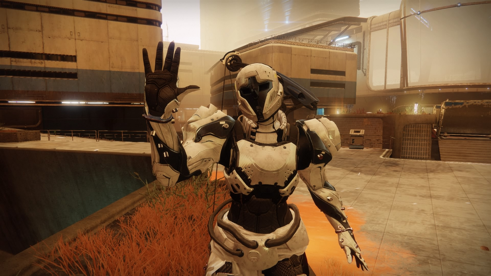
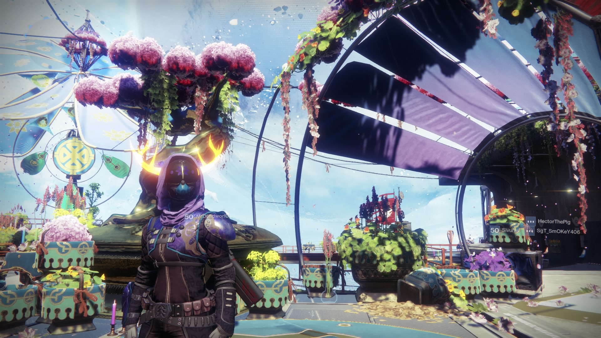
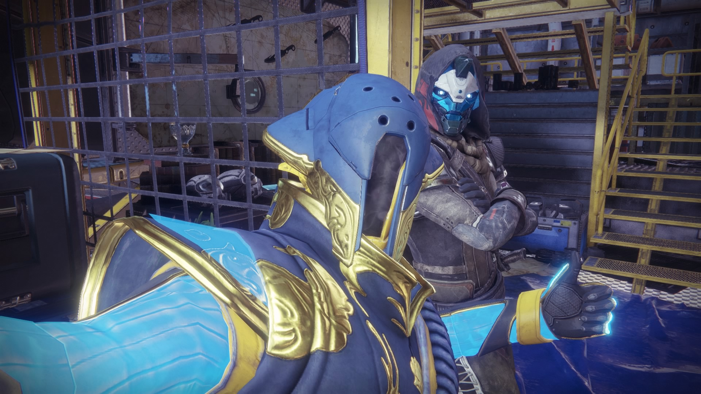
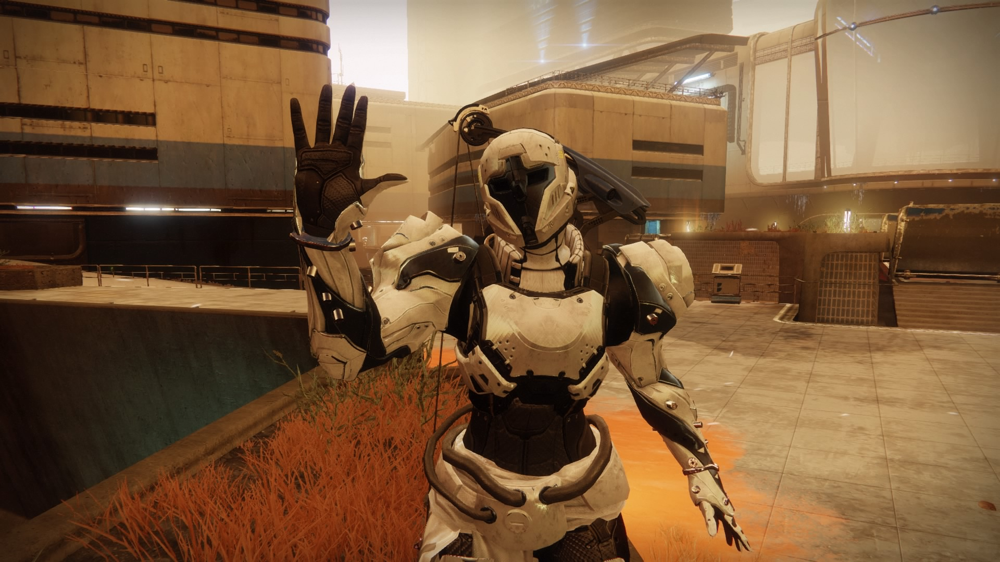
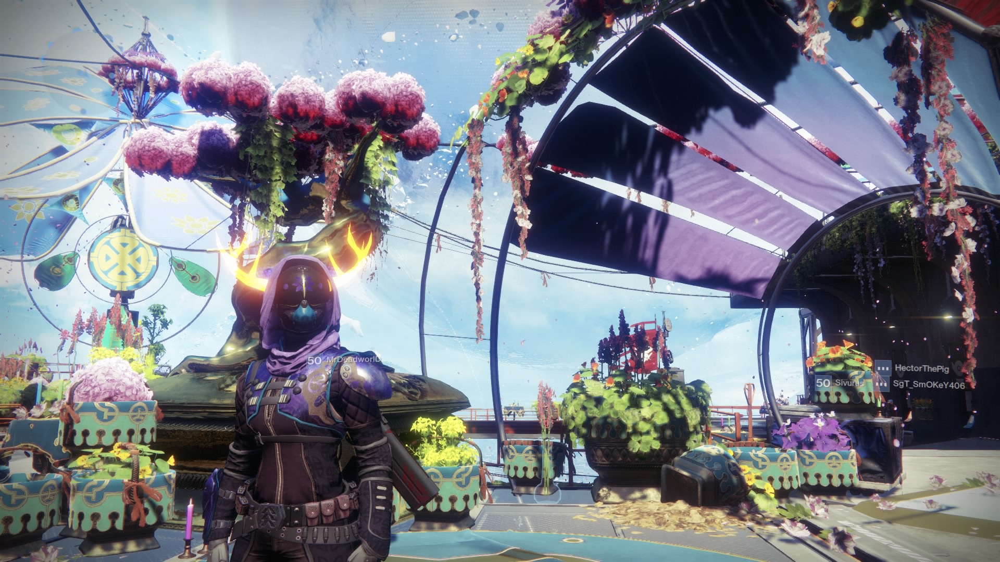
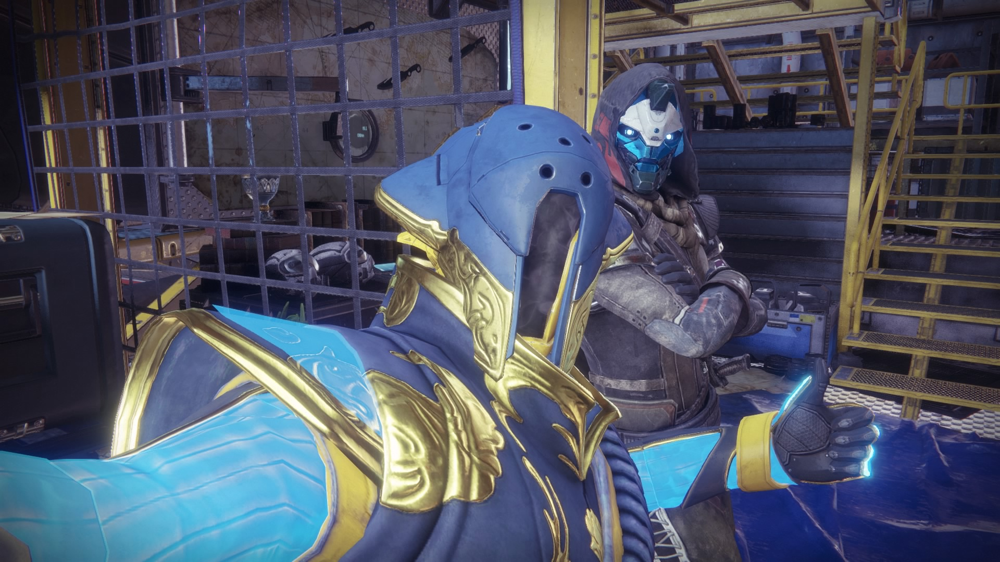
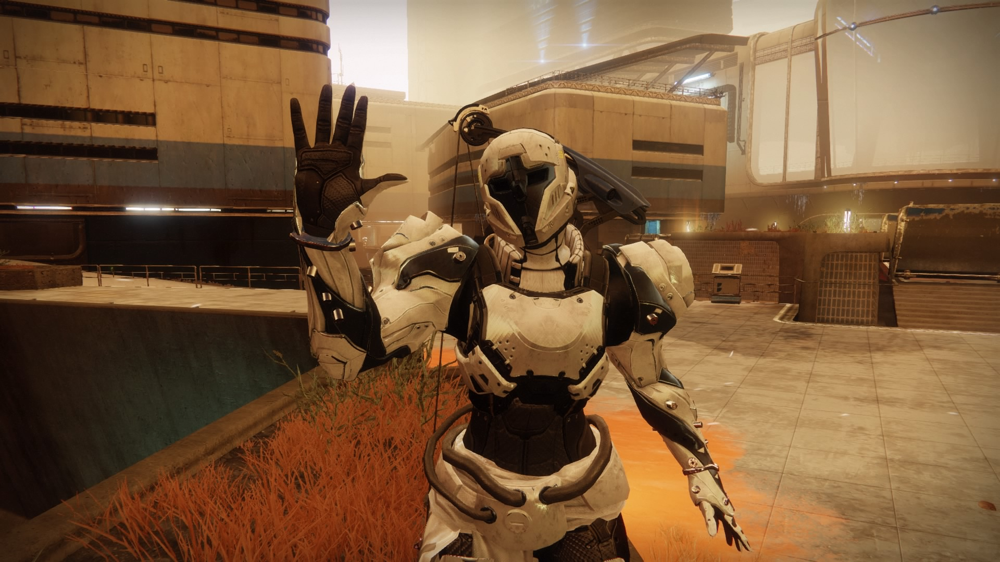
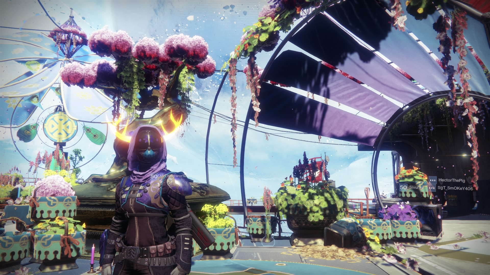
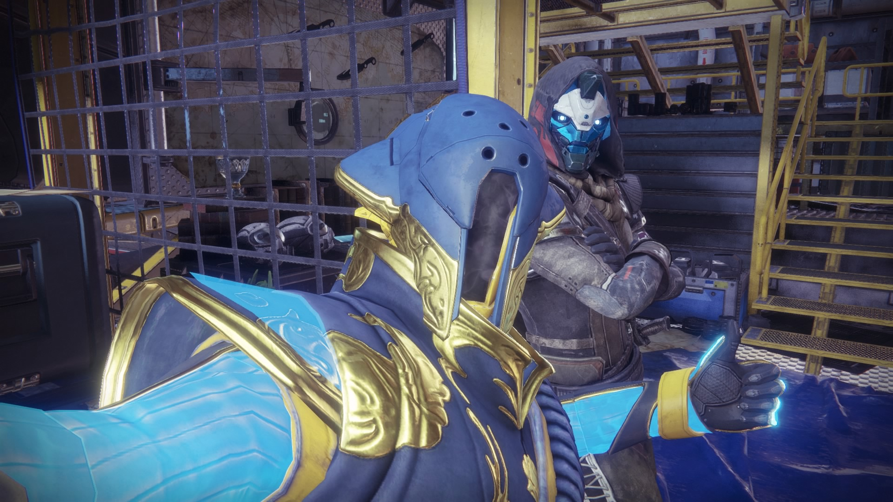

Lazer_Lad175 says... "I like being in the clan because it is a way for me to stay connected to my friends and family no matter how far away they may live. If I have activities that I need help with, I always have people I can count on. I have had many great memories, laughs, conversations, and adventures over the years with this clan that I will treasure forever. Which is why I am glad to be a part of this clan and with the people who are in it. :)"
TeddyJen40 says... "I like that I know the people, and that everyone is so friendly and welcoming. Also that we’re all active and willing to help when needed, even if it’s to play a couple rounds of crucible so you can finish a triumph."
epicwo3z says... "I've got friends that are on all the time I'm usually never alone playing destiny."
DJWHOZZITKILLING says... "We are a very interactive clan and though we want to succeed in our goals, we always go out having fun and just laughing first. We tend to include whomever we can given the opportunity. If anybody needs help we are more than happy to provide it."


